Отчёт «До и после»: интерфейсы Qronion
Состояние проекта: 1468572. Дата отчёта: 4 ноября 2026 года. Объём: изменения этой сессии, начиная с d0fbf44. Исходная точка кода: 7a40063. Интерфейсы сравниваются по смыслу, а не по одинаковому набору рабочих данных.
Снимки разных этапов подписаны. Демоданные и заглушка видео не являются рабочими данными. В отчёт включены только реализованные изменения.
1. Вход в систему
queue/login.html
До
Синий заголовок, синяя кнопка входа, голубой фокус полей.
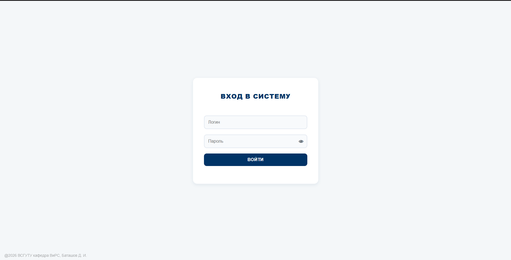
После
Бирюзовый заголовок и фокус, оранжевая кнопка «Войти». Компоновка и поведение формы сохранены.
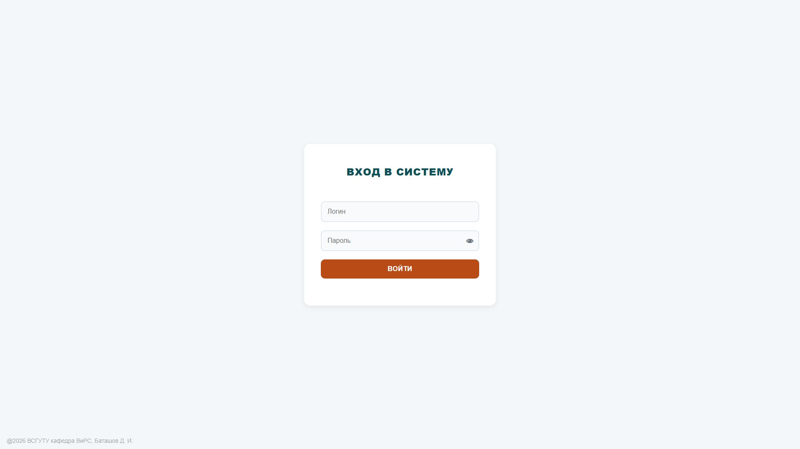
До: исходный снимок пользователя. После: снимок текущих стилей без отправки формы входа.
Проверки: Изменение палитры. Реальный вход и ошибки авторизации в рамках этой правки не проверялись.
Коммиты: 8ef3165
2. Рабочее место оператора
queue/operator.html
До
Команды в верхнем регистре, много жирных второстепенных подписей, синяя главная кнопка. При появлении таймера основное действие смещалось.
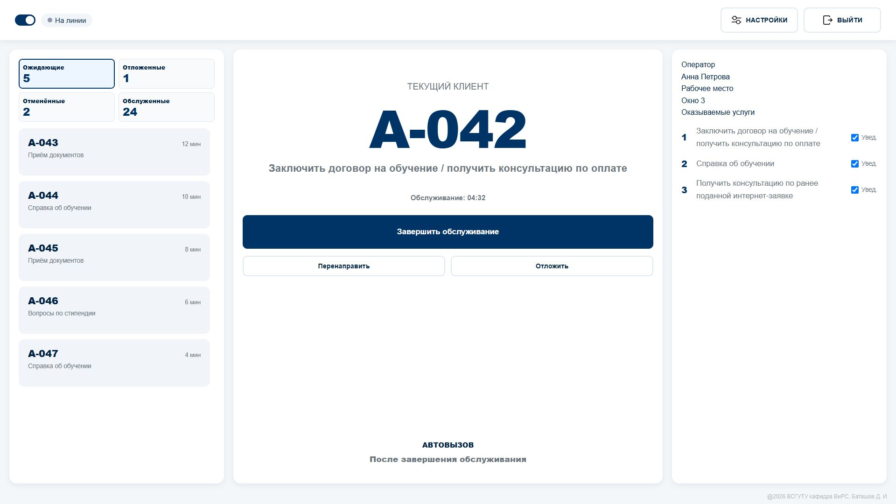
После
Бирюзовые номера и выбранные разделы, оранжевое главное действие. Команды в обычном регистре. Отступы внутри панелей 24 px, услуги справа выровнены по колонкам. Кнопка занимает стабильное положение между состояниями. Галочки и фокус согласованы с палитрой.
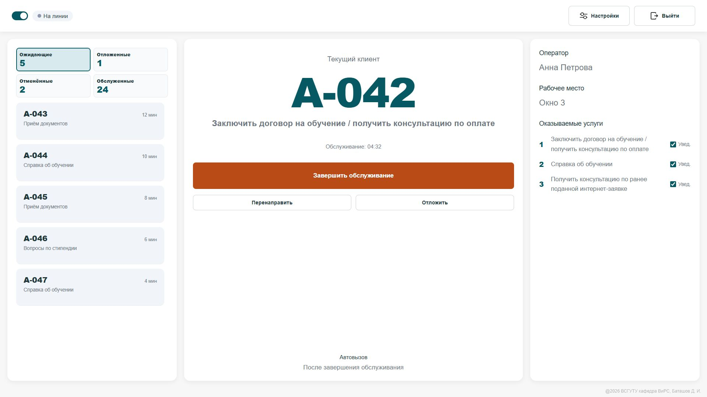
До: реконструкция на демонстрационных данных со стилями из 7a40063; это не снимок рабочего сервера. После: текущие стили с демонстрационным обслуживанием.
Проверки: Проверялись состояния свободен, вызван, обслуживается и перерыв на 1920 × 1080 и 1366 × 768. 38 проверок интерфейса проходили на соответствующих этапах.
Коммиты: d0fbf44, a2106ba, af08870, 968e3d0, 6ff5df4
3. Уведомления оператора
queue/operator.html; queue/js/operator-feedback.js
До
Однотонная плашка, короткое время показа и резкие сообщения. На промежуточном этапе появился избыточный заголовок «Действие недоступно».
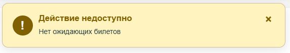
После
Цвет всей карточки обозначает статус: красный для ошибки, жёлтый для предупреждения, зелёный для успеха. Значок центрирован. Есть закрытие, ширина зависит от текста, общий заголовок убран. Ошибка остаётся до закрытия; остальные сообщения скрываются через 4 секунды.
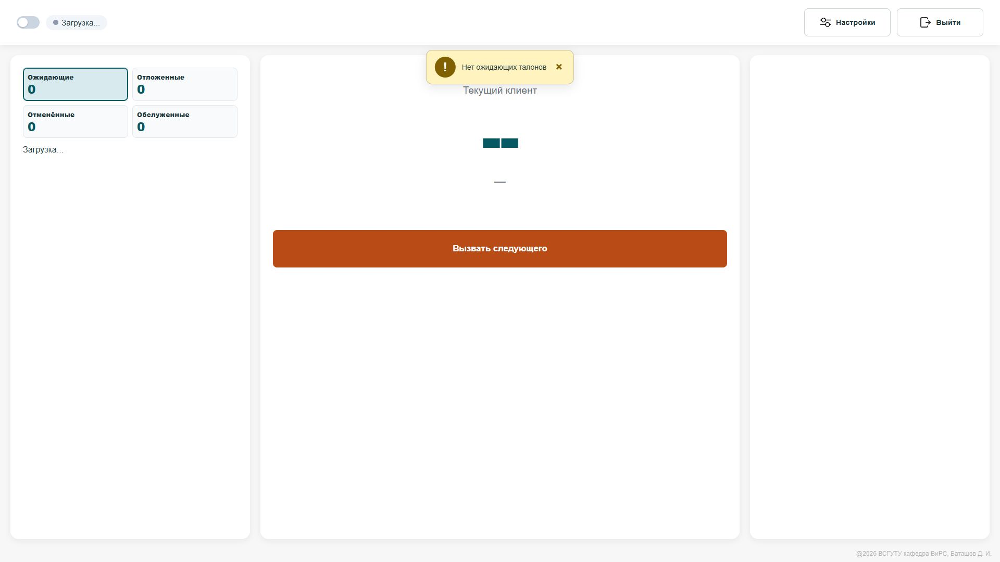
Снимок «До» относится к промежуточному варианту перед уплотнением. После: окончательное компактное предупреждение, вызванное настоящим кодом уведомлений на статическом экране.
Проверки: Проверялись повторный показ, закрытие, таймер и центрирование ранней версии в браузере. Для отчёта окончательное предупреждение дополнительно показано в браузере.
Коммиты: a693baf, 5d172b9, ae7bdc4
4. Терминал: выбор услуги
queue/terminal.html
До
Синие акценты и подъём карточки при наведении, общая анимация всех свойств. Не было viewport.
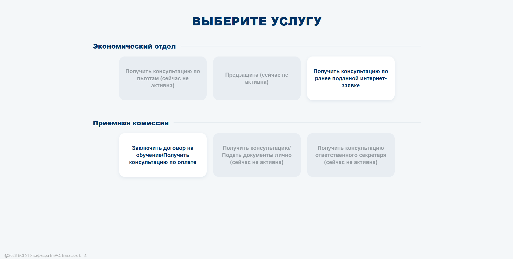
После
Сохранены группы, компоновка, центрирование текста и жирность. Акценты тёмно-бирюзовые, при нажатии карточка оранжевая. Подъём убран, добавлены фокус, режим уменьшенного движения и viewport. Пользовательский оттенок #0c4f57 сохранён.
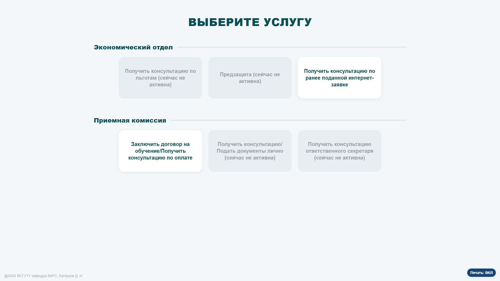
До: исходный снимок пользователя. После: текущая разметка и стили с демонстрационными услугами; печать не запускается.
Проверки: Проверялись связанные тесты терминала. Адаптивность на физическом терминале и работа принтера не подтверждены.
Коммиты: 87a8864, a0fb979
5. Терминал: выбор оператора
queue/terminal.html; queue/css/terminal-operator-choice.css
До
Очень крупные заголовки, центрированные карточки, кнопки выходили за нижний край. Назначение и состояние смешивались в одной крупной подписи.
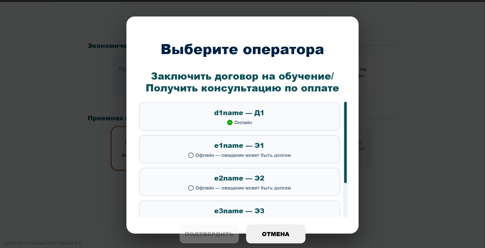
После
Заголовок 32 px и название услуги 20 px, оба по центру с жирностью 800. ФИО и рабочее место рядом, статус ниже. Выбор отмечается кругом и галочкой справа. Список прокручивается, кнопки остаются внутри окна.
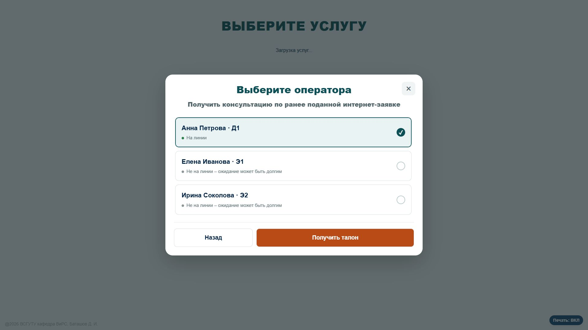
До: исходный снимок пользователя. После: шаблон модалки из текущего кода с вымышленными операторами.
Проверки: Добавлена штатная вертикальная сенсорная прокрутка. Проверка пальцем на рабочем устройстве остаётся открытой; перетаскивание мышью не реализовано.
Коммиты: a0fb979, eb744c2, 0226b67, 2b4dafd
6. Терминал: ожидание неработающего оператора
queue/js/terminal.js
До
Системный JavaScript confirm с кнопками OK/Cancel и техническим заголовком браузера.
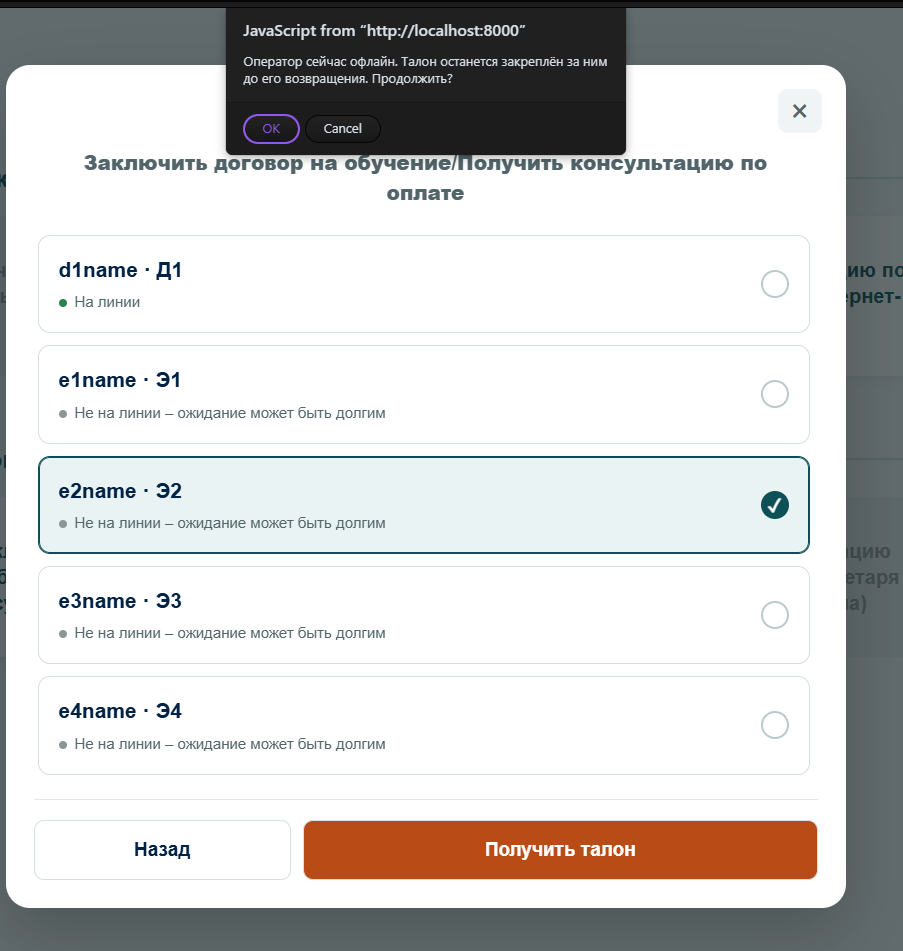
После
Подтверждение внутри существующей модалки: «Оператор сейчас не работает», пояснение об ожидании и действия «Выбрать другого» / «Всё равно получить талон». Второе окно поверх списка не создаётся.
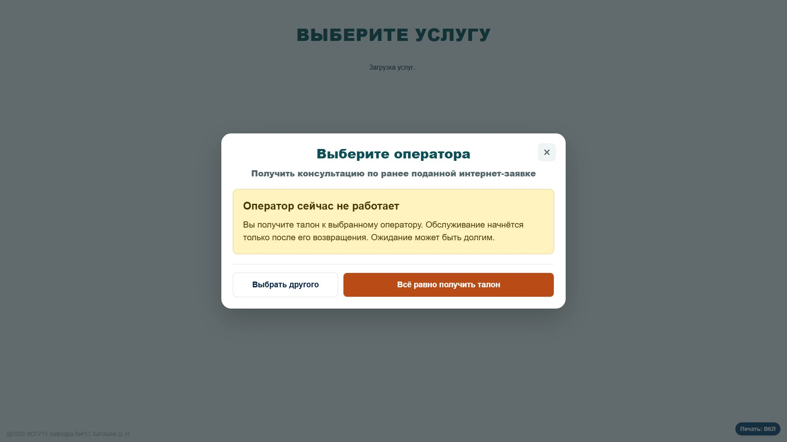
До: снимок пользователя. После: текущий шаблон подтверждения, без выдачи талона.
Проверки: Проверялись отказ, возврат к выбору, подтверждение и обычный выбор работающего оператора.
Коммиты: 16614f8
7. Основное табло
queue/board.html; профиль default
До
Карточки с тенями, синие талоны и коралловые окна, названия разделов «Ожидают» и «Вызванные».
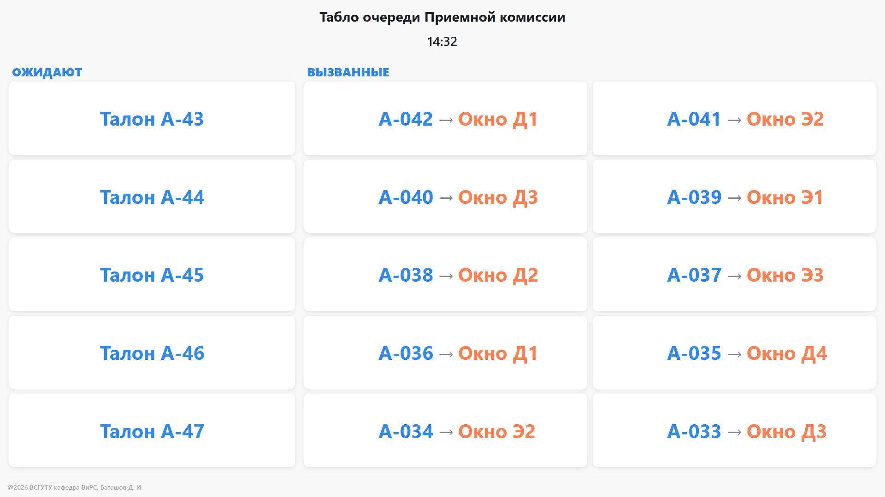
После
Строки с разделителями вместо карточек. Заголовки «Ожидайте вызова» и «Подойдите к окну». Шапка по центру; текст #1b3a42, талоны #087582, окна #c65316. Полная дата и время сохранены. Вызов временно мигает насыщенным оранжевым с белым текстом, затем возвращается к исходным цветам. Бегущая строка светлая с оранжевой границей, размер перенесён из медиа-табло.
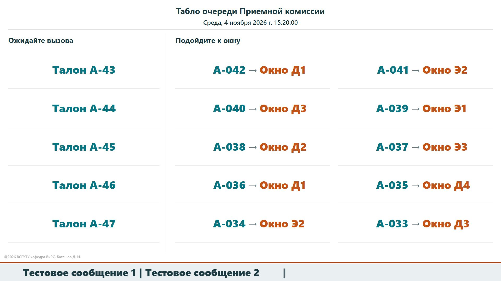
До: реконструкция обычного табло на демоданных с исходными стилями; не снимок рабочего сервера. После: текущие стили на демоданных. Статический снимок не доказывает правильность последних кадров мигания.
Проверки: Проверялись профили, пустые состояния, отложенные и отменённые талоны. Требуется итоговая проверка анимации на реальном телевизоре. Профиль screen=2 не оформлялся.
Коммиты: 2753294–f6fc306, 99b421e, cd71c5b
8. Медиа-табло
queue/board.html?screen=media
До
Синие талоны, коралловые окна, карточки с тенями. Плашка до перезапуска, таймеры перезагрузки страницы. Сохранялись старые отдельные HTML-страницы.
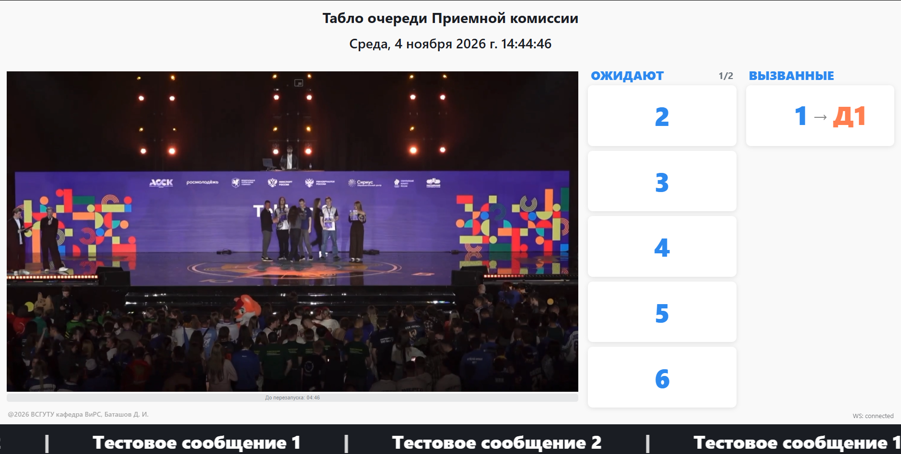
После
Оформление согласовано с основным табло через общий board-theme.css. Видео и звуковые флаги сохранены. Между ожиданием и вызванными добавлен разделитель 1 px; под датой линии нет. Бегущая строка: 72 px, текст 38 px, жирность 800, светлая расцветка. Удалены плашка, перезагрузка и связанное состояние, четыре старые HTML-страницы. Установщик указывает на действующий адрес.
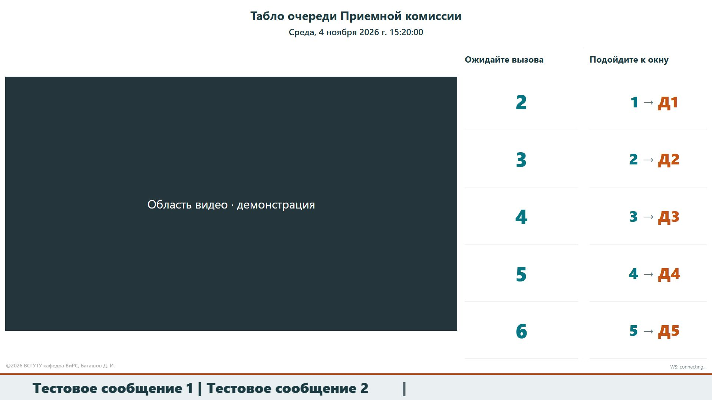
До: снимок пользователя с видео. После: текущие стили и демоталоны; вместо реального видео показана подписанная заглушка.
Проверки: Проверялись цикл плейлиста, повторное обновление, пустой список и восстановление. Длительное воспроизведение и звук на LG webOS не проверялись. Старые HTML удалены, общие и потенциально используемые ресурсы не удалялись без необходимости.
Коммиты: 99b421e, 3d644c2, 4e25c4c, cd71c5b
9. Админка: каркас и услуги
queue/admin.html#services
До
Синий градиент навигации, две равнозначные кнопки добавления и цветные плашки. Статус через dropdown, подписи «Имя» и «Выбор: да». Сохранение услуги отправляло пять запросов. Фокус редактора не управлялся.
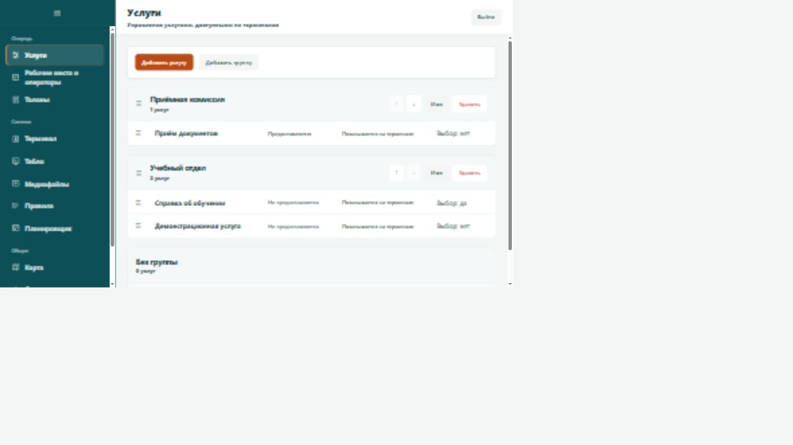
После
Однотонная бирюзовая навигация, оранжевое главное действие и нейтральное добавление группы. Статусы спокойнее, второстепенные сведения под названием. «Переименовать», понятные подписи и правильные склонения. Статус через переключатель. Сохранение одним запросом и транзакцией. Фокус переносится в редактор и возвращается после отмены; Escape закрывает редактор.
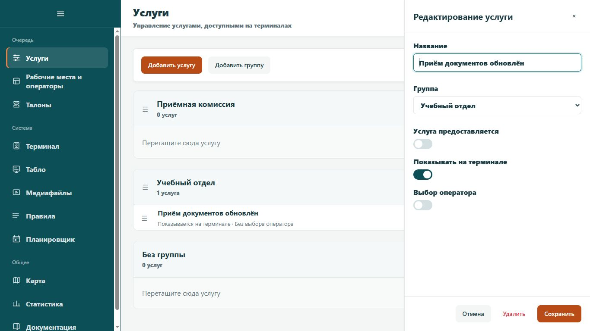
Пара снимков показывает этап до и после исправления удобства работы. Снимок «До» уже содержит новую палитру. После: браузерная проверка на изолированной базе.
Проверки: Добавлены проверки повторного запроса без дублей, совместимости переименования, неверной группы, отката и повторной попытки. SQLite подтверждает откат, но не особенности блокировок PostgreSQL.
Коммиты: 8db3e12, c3d28ae, 04041af
10. Админка: рабочие места и операторы
queue/admin.html#windows
До
Восемь колонок, ширина от 1280 px; на 1366 px действия уходили за край. Неясные кнопки «Снять», «Место», «Оператор». Сохранение места в три запроса, назначение могло оставить список заблокированным после сбоя.
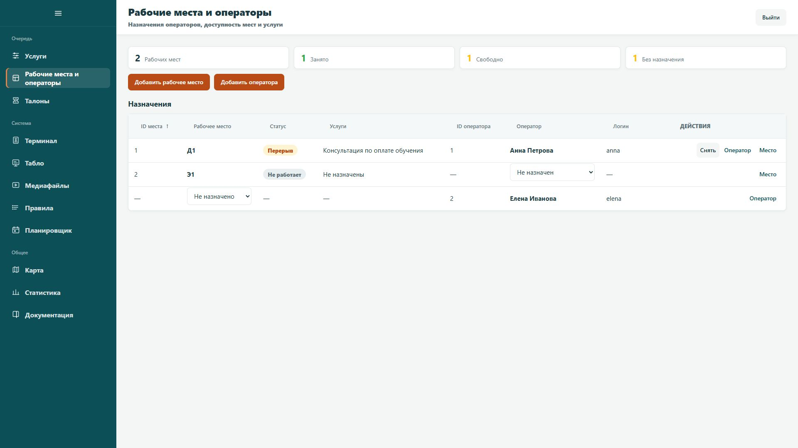
После
Пять колонок: ID и логин под названиями. Кнопки с полными подписями, второе добавление нейтральное. Поля приоритета имеют собственные названия. Место, статус и услуги сохраняются одной транзакцией; пересчёт доступности переиспользован. После ошибки список назначения доступен для повтора.
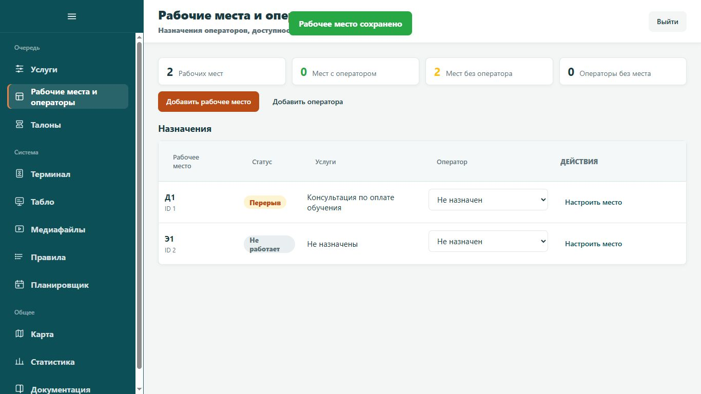
До: браузерный аудит уже в новой палитре. После: проверка текущего кода на изолированных данных; в этой проверке рабочие места не имели назначенных операторов.
Проверки: 55 выбранных тестов прошли на финальном этапе. Проверены откат, повтор без дублирования связей, неверная услуга и приоритет, пересчёт снятых услуг. В браузере таблица и действия поместились на 1366 px. История статусов назначенного оператора на PostgreSQL отдельно не проверялась.
Коммиты: 1468572
Оставшиеся ограничения
Проверить сенсорный терминал, реальный телевизор, печать и звук. Атомарность проверена на SQLite; история статусов и конкуренция на PostgreSQL требуют отдельной проверки. Остальные разделы админки получили общую палитру, но не полный аудит. Профиль screen=2 отдельно не менялся.
Подход: unslop (Damir Sokolovsky, CC BY 4.0), apple-design, ponytail. Числа тестов относятся к отдельным запускам и не складываются.